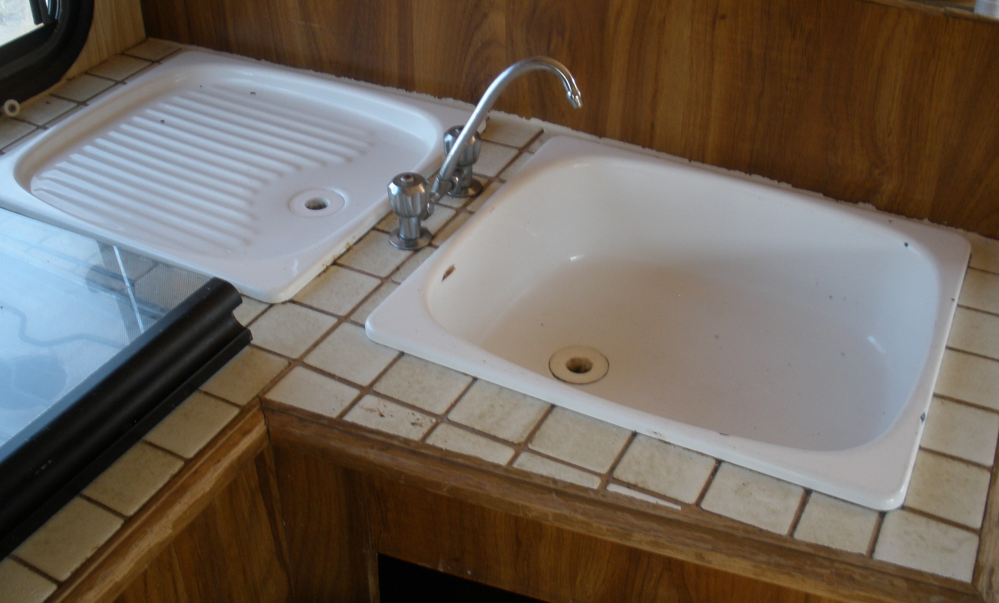
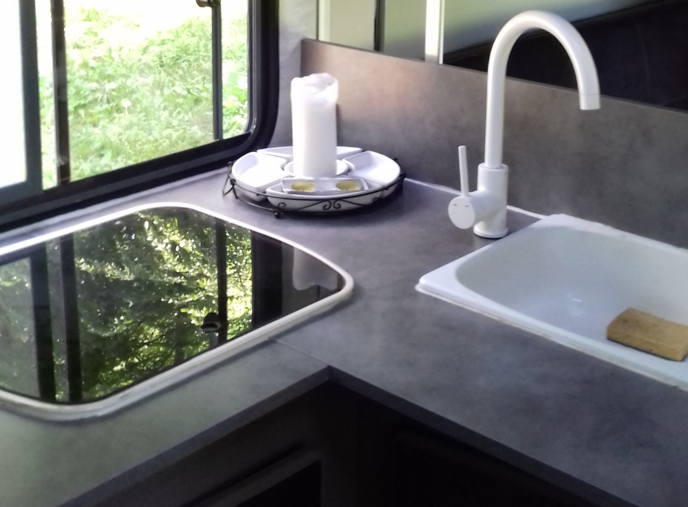
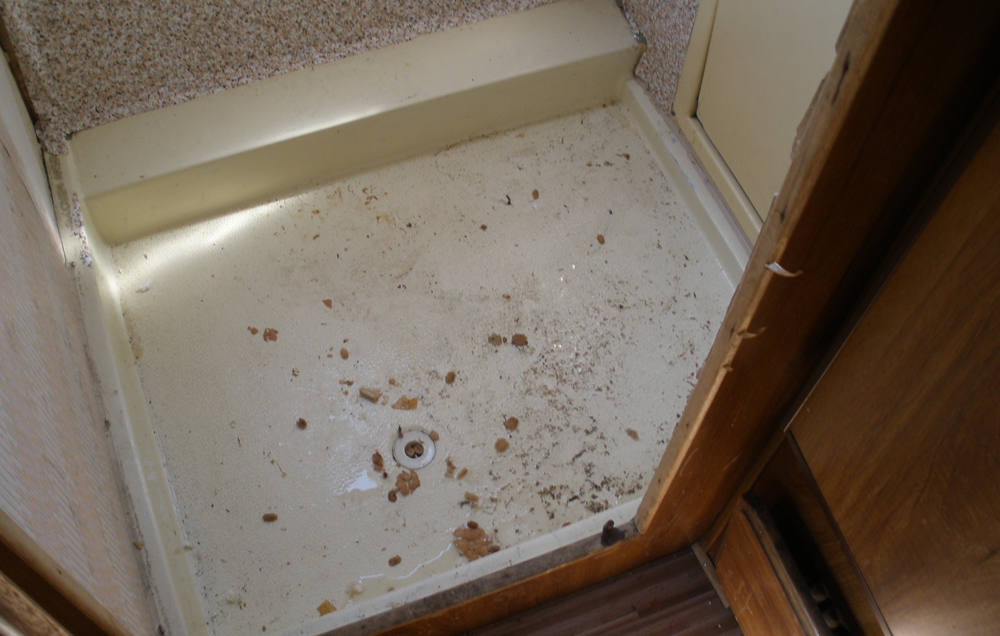
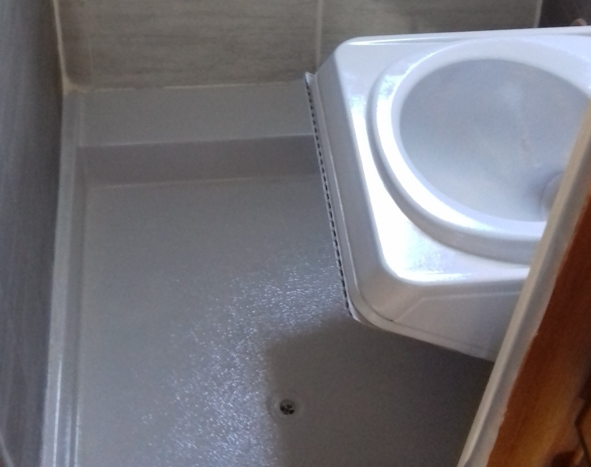
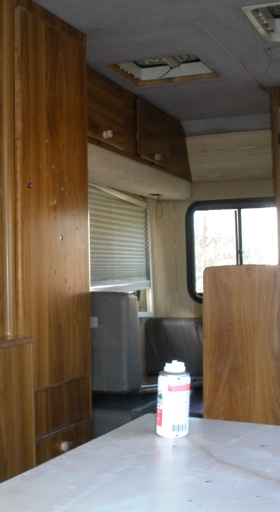
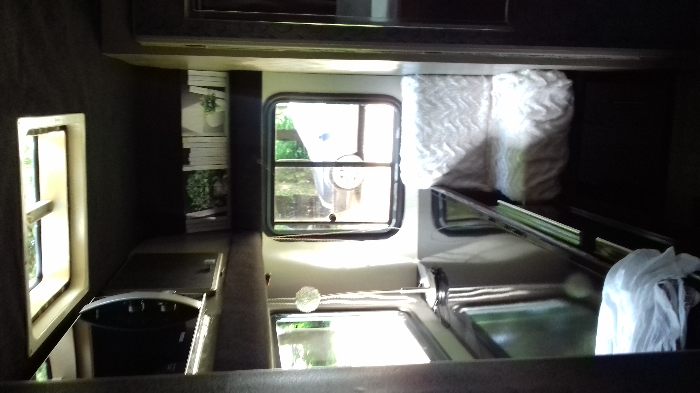
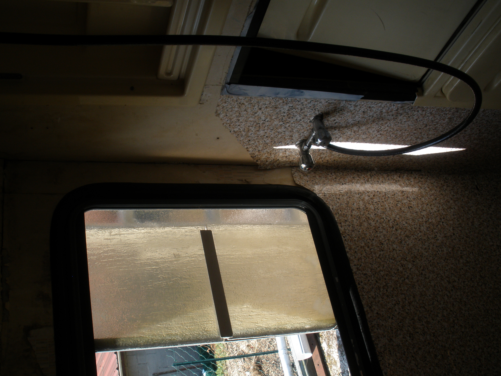
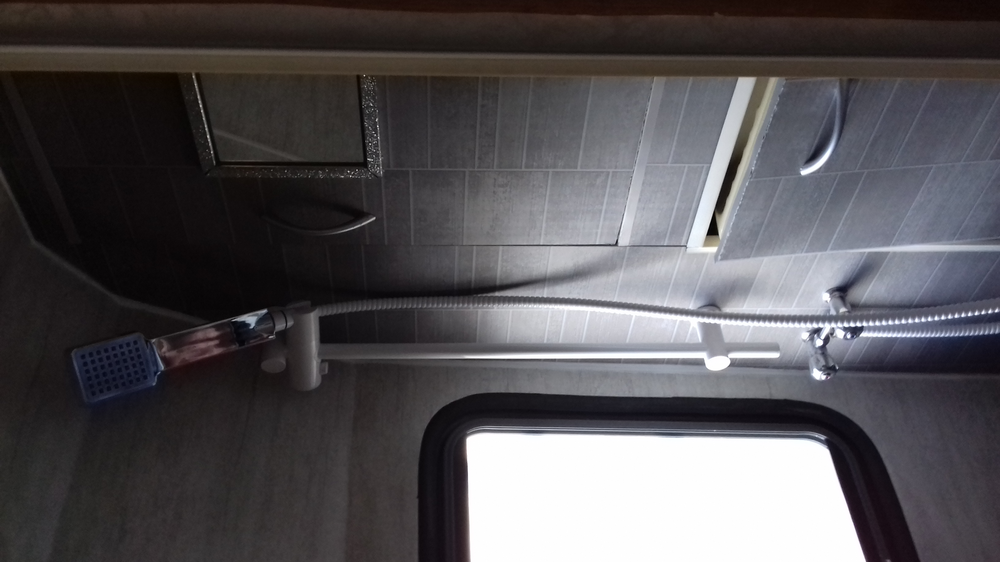

Camping-car Peugeot J5 Autostar de 1988


Nous avons rénové ce Camping-car en 2017 dans l'optique d'y vivre en permanence.
L'aménagement intérieur, l'équipement, la motorisation et l'aspect extérieur ont été rénové.
Après avoir effectué les travaux, nous avons eu la chance d'y demeurer durant 6 ans.







